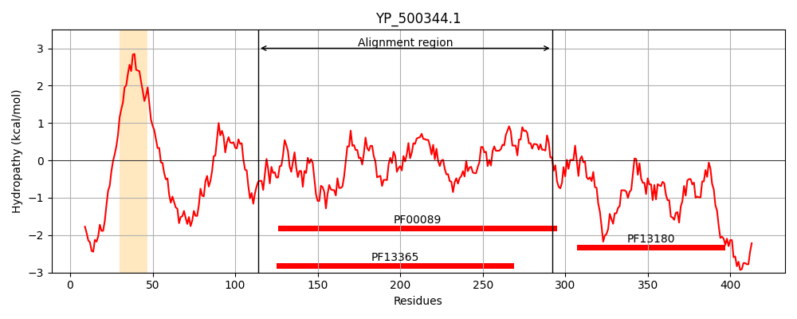
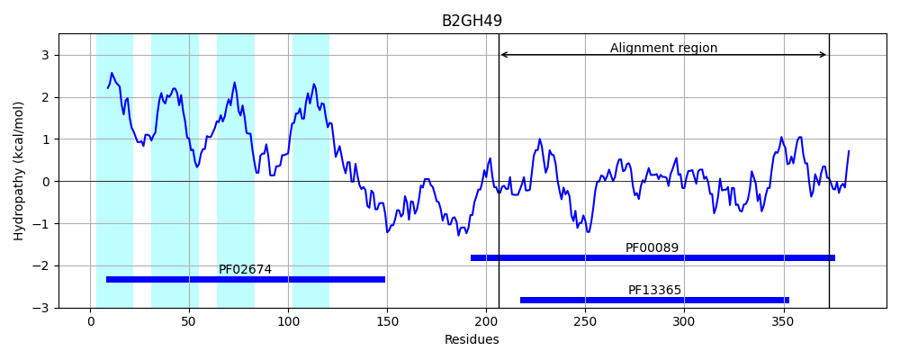
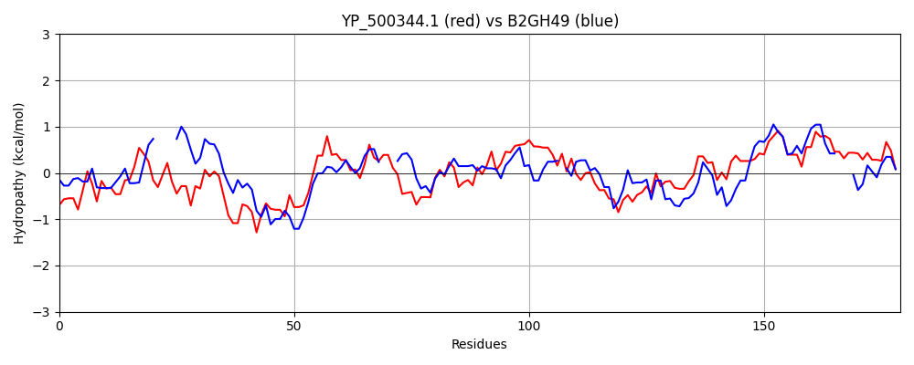

Hit Accession: B2GH49
Hit TCID: 9.B.160.1.10
Hit Description: gnl|BL_ORD_ID|1701 gnl|TC-DB|B2GH49|9.B.160.1.10 Putative S1C family peptidase OS=Kocuria rhizophila (strain ATCC 9341 / DSM 348 / NBRC 103217 / DC2201) GN=KRH_04540 PE=4 SV=1
Mach Len: 179
e:0.000000
Query TMS Count : 1
Hit TMS Count: 4
TMS-Overlap Score: 0.000000
Predicted Substrates:None
BLAST Alignment:
Score: 180 , Bit scores: 73 bits, E-value: 2.1e-14, Alignment length: 179, Percentage identity: 29
Query: 114 GKSSKPSEAGVGSGVIYQINNNSAYIVTNNHVIDGANEIRVQLHNKKQVKAKLVGKDAVTDIAVLKIENTKGIKAIQFANSSKVQTGDSVFAMGNPLGLQFANSVTSGIISASERTIDAETTGGNTKVSVLQTDAAINPGNSGGALVDINGNLVGINSMKIAATQVEGIGFAIPSNEVK 292
G ++K ++ GSG + Q +VTN HV+ G ++ V+ + + A+ V DA +D+AVL+I + + + V G++V G PLG + + + + + TTG S++Q + GNSGG L+D +G++VG+ K QV G+AIP + V+
Sbjct: 206 GTAAKCAQNQTGSGFVAQPGT----VVTNAHVVAGVDQPVVETRDGRAYPARTVQYDAASDLAVLRIPD---LPEAPLSMDGTVSQGEAVSFAGYPLGGPYTLRAAT-VQGQAVAPVQNVTTGETQTRSIIQIAGKVEQGNSGGPLLDADGHVVGVVFAKAVQDQV---GYAIPVDRVR 373 | Protein Hydropathy Plots: |
|---|
|  |  |
Pairwise Alignment-Hydropathy Plot:
|
|---|
|  |